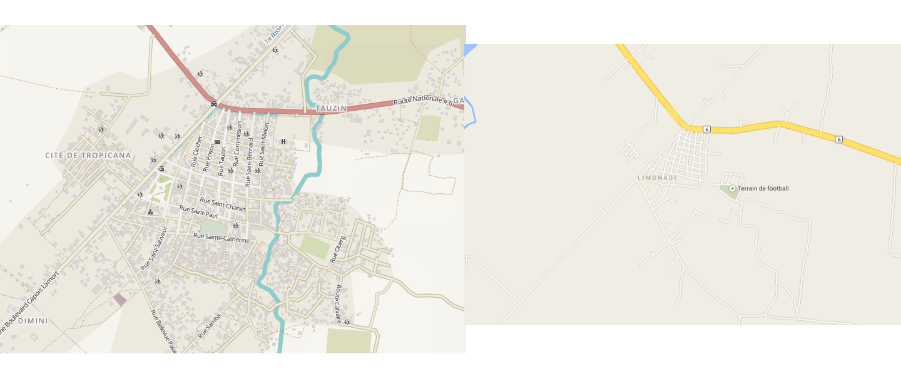
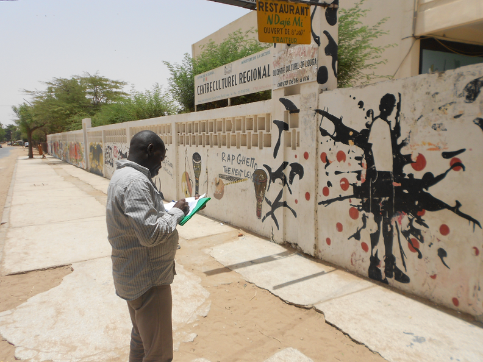
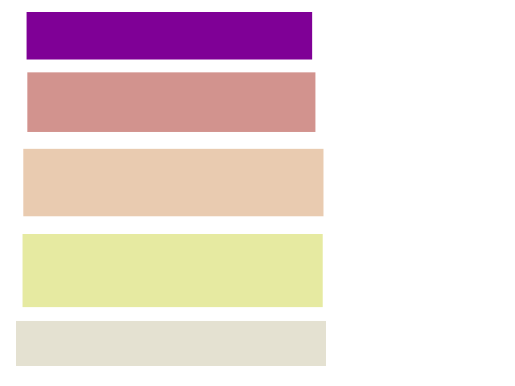
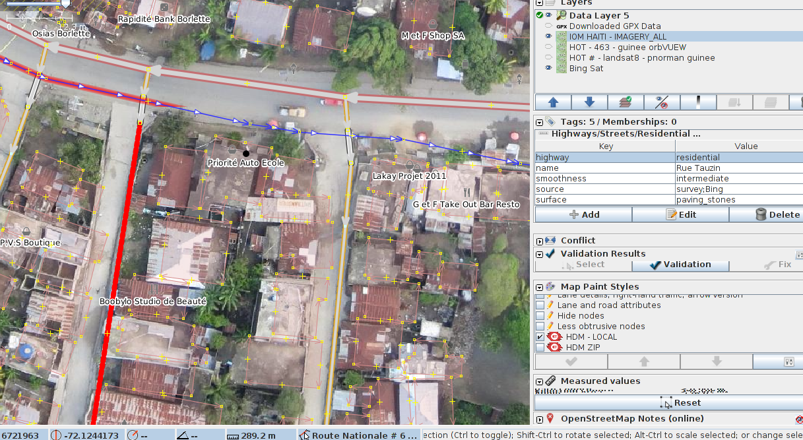
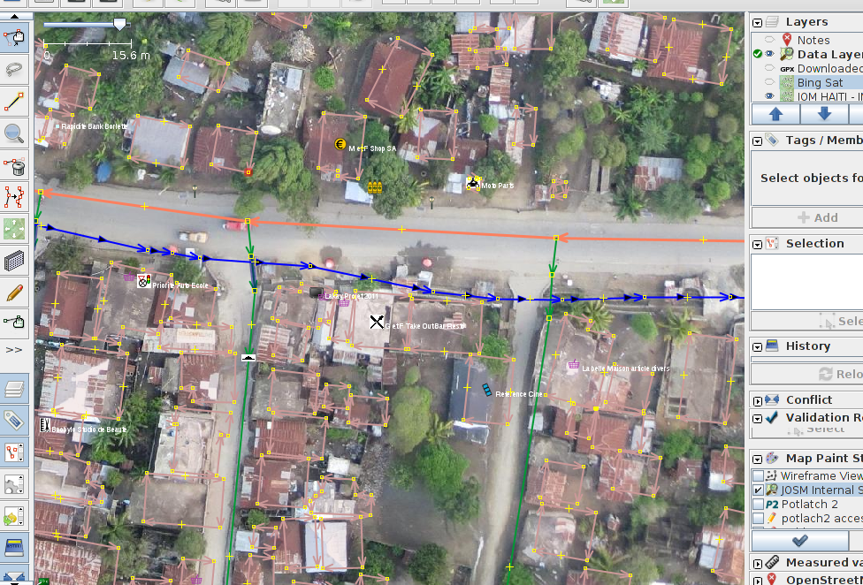
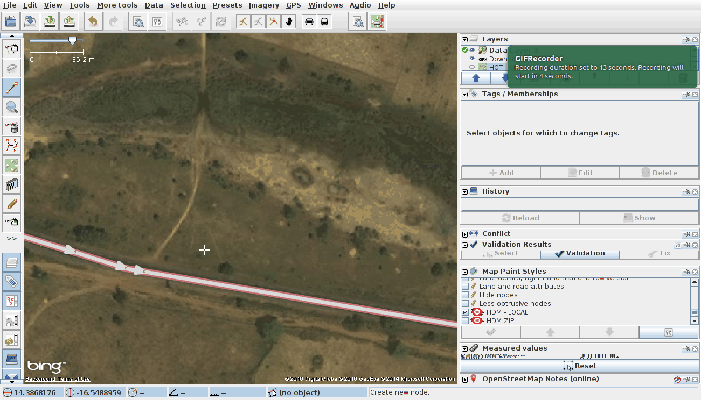
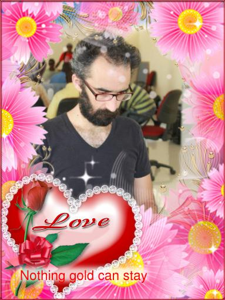
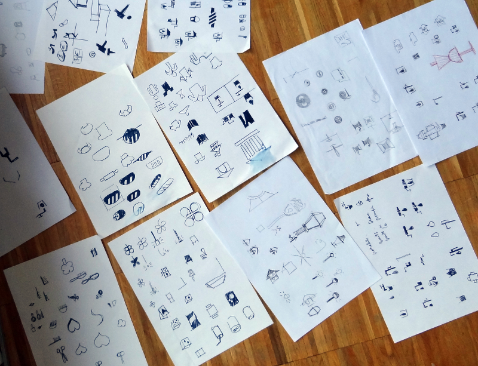
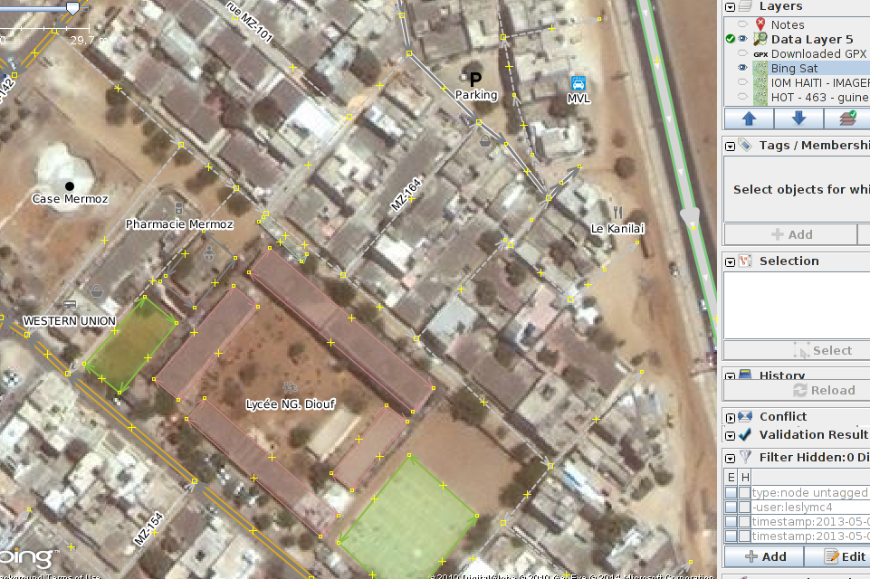
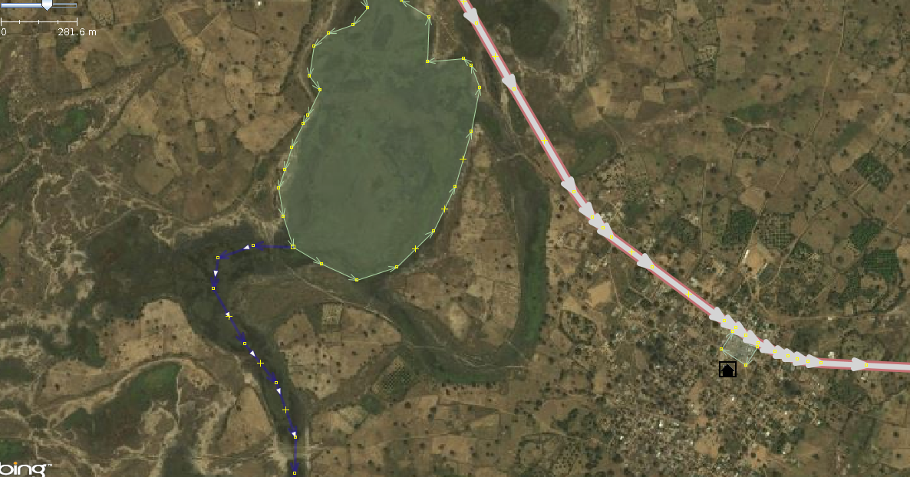

The HOT josm presentation
github.com/skorasaurus/hotjosmpres
by Will Skora @skorasaurus
OSM: OpenStreetMap The wikipedia of geographic data -
anyone can contribute and utilize as they wish (w/ attribution)
Data from imports (TIGER),
aerial imagery,
local knowledge,
GPS Traces
other geodata non-existant, outdated, or $ .
THIS IS WHY I'M (W/)
HOT


Representing the data that is relevant
Road (surface, type, and condition)

visual cues 


icons from:
Maki
the noun project
maki
and Yohan

icons across cultures 


More classifications (displaced people camps; damaged/collapsed buildings)
ToDo